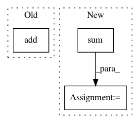

ab699b8f2a0ac546812a4eb2a4e0ed31d12b8112,dipy/tracking/streamline.py,,deform_streamlines,#Any#Any#Any#Any#Any#Any#,233
Before Change
displacements = values_from_volume(deform_field, stream_in_curr_grid)
stream_in_world = transform_streamlines(stream_in_curr_grid,
current_grid_to_world)
new_streams_in_world = list(np.add(displacements, stream_in_world))
new_streams_grid = transform_streamlines(new_streams_in_world,
np.linalg.inv(ref_grid_to_world))
new_streamlines = transform_streamlines(new_streams_grid,
After Change
displacements = values_from_volume(deform_field, stream_in_curr_grid)
stream_in_world = transform_streamlines(stream_in_curr_grid,
current_grid_to_world)
new_streams_in_world = [sum(d, s) for d, s in zip(displacements,
stream_in_world)]
new_streams_grid = transform_streamlines(new_streams_in_world,
np.linalg.inv(ref_grid_to_world))
new_streamlines = transform_streamlines(new_streams_grid,
np.linalg.inv(stream_to_ref_grid))
In pattern: SUPERPATTERN
Frequency: 3
Non-data size: 3
Instances
Project Name: nipy/dipy
Commit Name: ab699b8f2a0ac546812a4eb2a4e0ed31d12b8112
Time: 2018-04-17
Author: ccorbin@usc.edu
File Name: dipy/tracking/streamline.py
Class Name:
Method Name: deform_streamlines
Project Name: SheffieldML/GPy
Commit Name: 3edd867ece4fa503d537e5488581718538429b8f
Time: 2012-12-03
Author: n.durrande@sheffield.ac.uk
File Name: GPy/kern/Matern52.py
Class Name: Matern52
Method Name: dKdiag_dtheta
Project Name: Theano/Theano
Commit Name: 6ec43120736e7fdeb010727e391fcd362cddf028
Time: 2017-03-14
Author: nouiz@nouiz.org
File Name: theano/scan_module/scan_op.py
Class Name:
Method Name: profile_printer